Validaciones de formularios
Este es un aspecto muy importante al implementar un formulario ya que nos permite definir que la información ingresada por los usuarios cumpla con las características y necesidades de nuestra página, en otras palabras podemos definir no solo el tipo de dato que deseamos recibir, si no que también el dónde hacerlo y las características obligatorias de esta información.
Las validaciones se pueden aplicar tanto en el lado del navegador (frontend) como en el lado del servidor (backend) , en el caso de HTML únicamente se interactúa con las validaciones del lado del navegador, las validaciones en el navegador actúan como un primer filtro para la información ingresada en la página, lo cual las convierte en un recurso muy útil para conseguir un mejor funcionamiento en nuestra página.
Por lo tanto las validaciones en el navegador nos ayudan a:
Evitar el ingreso de datos erróneos
Validar que la información ingresada tenga el formato adecuado
Verificar que toda aquella información que consideremos indispensable no sea omitida
En algunos casos que la información ingresada sea real
Nota: Cabe resaltar que si bien estas validaciones son muy buena implementación no debe ser la única medida de seguridad de la página, ya que por muy bien estructuradas y verificadas que estén un usuario malicioso aún puede alterar e inyectar datos en el envío de estos hacia el servidor.
Tipos de Validación
Validación integrada
-
Una de las características más resaltadas de los elementos de formulario modernos es su capacidad para validar la mayoría de los datos sin recurrir a JavaScript, esto a través del uso de funciones las cuales están disponibles de forma inherente a la mayoría de los elementos.
Si los datos ingresados en el elemento cumplen con todas pautas definidas para este se considera válido, en aquellos elementos definidos como válidos:
El elemento es compatible con la pseudo clase de CSS: ":valid", la cual permite aplicar estilos específicamente a todos aquellos elementos válidos
Si el usuario intenta enviar los datos del formulario el navegador lo hará, siempre y cuando no exista otra limitante que lo impida
Cuando un elemento no es válido:
El elemento coincide con la pseudo clase CSS: ":invalid" la cual le permite aplicar estilos CSS a todos aquellos elementos que no sean válidos
Si el usuario intenta enviar la información el navegador rechazará su acción y mostrará un mensaje de error hasta que se cumplan todos los parámetros
Nota: A continuación se nombran los términos utilizados para los casos de error que pudiesen cometer los usuarios incumpliendo las pautas del formulario resultando en elementos interpretados como inválidos:
-
badInput:
La propiedad badInput de solo lectura de un objeto ValidityState indica si el usuario proporcionó información que el navegador no puede convertir
patternMismatch:
La propiedad patternMismatch de solo lectura de un objeto ValidityState indica si el valor de una entrada, después de haber sido editado por el usuario, no se ajusta a las restricciones establecidas por el atributo de patrón del elemento.
-
rangeOverflow o rangeUnderflow:
La propiedad rangeOverflow de solo lectura de un objeto ValidityState indica si el valor de una entrada, después de haber sido editado por el usuario, no se ajusta a las restricciones establecidas por el atributo max del elemento.
La propiedad rangeUnderflow de solo lectura de un objeto ValidityState indica si el valor de una entrada, después de haber sido editado por el usuario, no se ajusta a las restricciones establecidas por el atributo min del elemento.
-
stepMismatch:
La propiedad stepMismatch de solo lectura de un objeto ValidityState indica si el valor de una entrada, después de haber sido editado por el usuario, no se ajusta a las restricciones establecidas por el atributo de paso del elemento.
-
tooLong o tooShort:
La propiedad tooLong de solo lectura de un objeto ValidityState indica si el valor de una entrada o un área de texto, después de haber sido editado por el usuario, excede la longitud máxima de la unidad de código establecida por el atributo maxlength del elemento.
La propiedad tooShort de solo lectura de un objeto ValidityState indica si el valor de un input, button, select, output, fieldset o textarea, después de haber sido editado por el usuario, es menor que la longitud mínima de la unidad de código establecida por la longitud mínima del elemento atributo.
-
typeMismatch:
La propiedad typeMismatch de solo lectura de un objeto ValidityState indica si el valor de una entrada, después de haber sido editado por el usuario, no se ajusta a las restricciones establecidas por el atributo de tipo del elemento.
-
valueMissing:
La propiedad valueMissing de solo lectura de un objeto ValidityState indica si un control requerido, como input, select o textarea, tiene un valor vacío.
Ejemplo de la implementación de los estilos CSS según el estatus del elemento:
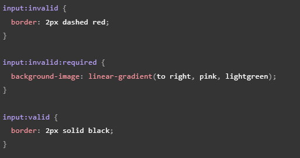
Este código retorna un cuadro de texto al que se le asignan estilos en base a su estatus, es decir al usar el atributo "required" la entrada será compatible con las pseudo-clases ":required", ":invalid" y ":valid", por otro lado el elemento será considerado inválido en aquellos casos en los que se esté por enviar el elemento vacío, por lo cual se mostrará un mensaje de alerta notificando de la falta.
Nota: El indicar cuándo el campo de un formulario es obligatorio no solo es una buena práctica sino que es un requisito de las normas de accesibilidad de la WCAG.
Nota: También es una buena práctica el preguntar solo lo necesario a los usuarios, los formularios excesivamente largos así como la información irrelevante pueden ser contraproducentes.
Los atributos de validación son:
Required:
-
Define si alguno de los campos es de carácter obligatorio para poder realizar el envío de los datos del formulario, por lo tanto mostrará un mensaje de error mientras que esta entrada se encuentre vacía, la cual también será tomada como inválida.
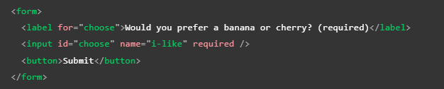
Minlength y Maxlength:
-
Definen la longitud máxima y mínima de los datos textuales, por lo que el elemento será considerado inválido si el texto en este es inferior al mínimo o superior al máximo definidos con estos atributos.
Nota: los navegadores normalmente no permiten escribir un valor más largo de lo esperado.
Nota: Una buena herramienta para la experiencia del usuario es utilizar el atributo Maxlength junto con JavaScript para mostrar un contador de caracteres al usuario (por ejemplo como lo hace Twitter al twittear).
Min y Max:
-
Especifica los valores mínimo y máximo de los elementos de entrada numéricos, en otras palabras definen el rango en el que se debe encontrar el número para ser aceptado, si el número no se encuentra dentro de este el elemento se considerará inválido.
Ejemplo:
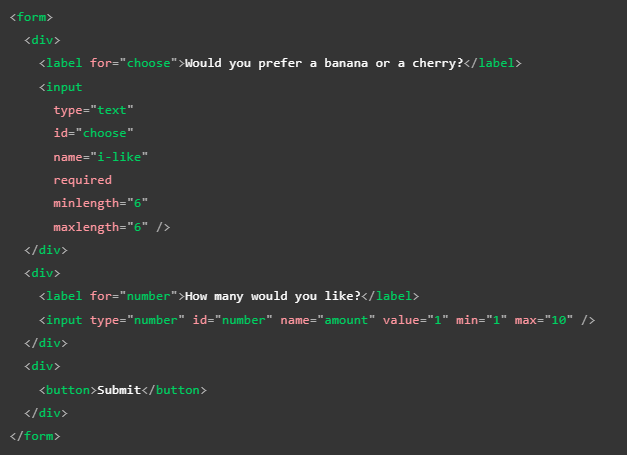
Este código define la cantidad de caracteres que pueden ser añadidos en un cuadro de texto así como el rango numérico que será aceptado en el elemento number, por lo tanto en el elemento texto si no cumple con el rango de caracteres requerido el elemento es tratado como inválido, del mismo modo si el número ingresado en el number no se encuentra entre 1 y 10 será considerado inválido, a continuación se muestra el resultado funcional de este código:
Nota: elementos tipo "number" "range" y "date" también pueden adoptar el atributo "step" el cual define en qué cantidad incrementará o se reducirá el valor cuando se usen controles de entrada (flechas arriba y abajo).
Type:
-
Especifica el tipo de dato que será manejado por el elemento, como por ejemplo correo o número, etc.
pattern:
-
Este atributo define una expresión regular que será aceptada en el elemento, una expresión regular es una cadena de caracteres la cual al ser definida esta es identificada y diferenciada de cualquier otra por el navegador, por lo cual el atributo "pattern" permite definir que únicamente sean aceptadas ciertas cadenas de caracteres (números o palabras) que hayamos definido con anterioridad, por ejemplo:
Ejemplo funcional:
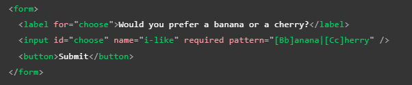
El resultado de ese código es el siguiente:
Las expresiones regulares diferencian entre mayúsculas y minúsculas por lo que se ha definido la compatibilidad de los caracteres en el atributo "pattern", por lo tanto el input acepta cuatro expresiones regulares las cuales son: Banana, banana, Cherry y cherry, en este tipo de casos mientras la cadena de caracteres que el usuario ingrese sea diferente a la definida en "pattern" este elemento será reconocido como inválido.
Nota: para los estilos CSS de este ejemplo se utilizaron los basados en el estatus del elemento, los cuales ya fueron mostrados con anterioridad.
Nota: No todos los elementos input necesitan aplicar el atributo "pattern" para definir expresiones regulares, por ejemplo el elemento "email", el cual define que el texto ingresado en este concuerde con el formato de un correo electrónico.
Nota: El elemento "textarea" no es compatible con el atributo "pattern".
Validación en base a JavaScript
Se trata de todo aquel frameworks o código propio JavaScript utilizados para validar un formulario. Este tipo de validaciones tiene la ventaja de ser de carácter completamente personalizable para el formulario, por lo que puede cubrir cualquier tipo de necesidad de información, e incluso si el código se encuentra lo bastante bien estructurado estas validaciones también pueden brindar un mayor nivel de seguridad a la página.
Sin embargo, también cuenta con la desventaja de que el implementar estas validaciones puede ser bastante más complejo que hacerlo con las validaciones integradas HTML, ya que es necesario formular un código propio o incluir una biblioteca o framework.
Debido a que estas validaciones involucran un lenguaje de programación externo como lo es JavaScript, es necesario tener presentes ciertas cualidades de este, como lo son el DOM y las API, esto debido a que estas funcionalidades y características de JavaScript tienen la capacidad de repercutir en los elementos HTML.
Existen dos tipos de validaciones JavaScript: las que se basan en la API de validación de restricciones y aquellas validaciones sin ninguna API integrada.
API de Validación de restricciones
-
Este caso consta de un conjunto de métodos y propiedades disponibles en las siguientes interfaces DOM de los elementos de formularios.
"HTMLButtonElement" (representa etiquetas "button")
"HTMLFieldSetElement" (representa etiquetas "fieldset")
"HTMLInputElement" (representa etiquetas "input")
"HTMLOutputElement" (representa etiquetas "output")
"HTMLSelectElement" (representa etiquetas "select")
"HTMLTextAreaElement" (representa etiquetas "textarea")
La API de validación de restricciones hace que las siguientes propiedades estén disponibles en los elementos anteriores.
validationMessage:
-
Este atributo devuelve un mensaje de error descriptivo de las condiciones de validación que el elemento no cumple. Según cuál sea el caso, este atributo puede tener tres retornos posibles:
En caso de que el elemento HTML, tal como se ha mencionado, incumpla alguna pauta de validación (elemento inválido), el retorno del atributo será un mensaje de error previamente definido a través de JavaScript.
En el caso de que el elemento HTML no sea un candidato viable para la aplicación de este atributo (willValidate: false), este retornará un valor "false".
Por último, si el elemento cumple con todas las condiciones de validación (elemento válido), este atributo retornará una cadena vacía.
validity:
-
Retorna un elemento "validityState" el cual puede contener una de varias propiedades las cuales describen el estado de validez del elemento HTML, entre los cuales algunos de los más comunes son:
patternMismatch:
-
Se acciona en el caso de que el valor ingresado no coincida con el patrón definido; por lo tanto, en este caso retorna un "true", en cuyo caso el elemento coincidirá con la pseudo-clase CSS :invalid. Por otro lado, en caso de que el valor sí cumpla con el patrón definido, únicamente retorna un "false".
tooLong:
-
En caso de que la longitud del valor ingresado sea inferior o igual a la longitud máxima definida, el atributo "maxlength" retornará un valor "false"; sin embargo, en caso de que la longitud del valor supere esta pauta, entonces en su lugar retornará un valor "true", en cuyo caso el elemento HTML coincidirá con la pseudo-clase CSS ":invalid".
tooShort:
-
En el caso de que la longitud del valor ingresado sea superior o igual a la longitud mínima definida en el atributo "minlength", el retorno de este elemento será un "false"; sin embargo, si se incumple esta pauta y el valor ingresado posee una longitud inferior a la mínima, entonces el retorno del elemento será un "true", en dicho caso el elemento HTML coincidirá con la pseudo-clase CSS ":invalid".
rangeOverflow:
-
Este elemento mide si el valor de etiquetas "number" se encuentra por debajo del valor máximo definido en el atributo "max". Si esta condición se cumple, el retorno del elemento será un valor "false"; por otro lado, si esta condición se incumple, entonces el elemento retornará un valor "true", por lo tanto, el elemento HTML coincidirá con las pseudo-clases CSS ":invalid" y "out-of-range".
rangeUnderflow:
-
Comprueba si el valor numérico de etiquetas "number" se encuentra por encima del valor mínimo establecido en el atributo "min". En caso de que esta condición sea cumplida, el retorno del elemento será "false"; por otro lado, si esta pauta no es cumplida y el valor ingresado se encuentra por debajo del mínimo, el retorno será un valor "true", en cuyo caso el elemento HTML coincidirá con las pseudo-clases ":invalid" y "out-of-range".
typeMismatch:
-
Este elemento comprueba si el valor introducido posee la sintaxis requerida. De cumplirse esta pauta, el retorno será un valor "false"; de otra manera, si esta pauta es incumplida, el retorno será un valor "true", en cuyo caso el elemento HTML coincidirá con la pseudo-clase CSS ":invalid".
valid:
-
Comprueba si el elemento HTML cumple con todas las restricciones de validación. En el caso de que así sea, el elemento retorna un valor "true" y coincidirá con la pseudo-clase CSS ":valid". En el caso contrario de que el elemento incumpla alguna de las restricciones, entonces el retorno será "false" y de este modo el elemento HTML coincidirá con la pseudo-clase CSS :invalid.
valueMissing:
-
Retorna "true" en el caso de que el elemento HTML requiera un valor de forma obligatoria, sin embargo este se encuentre vacío; de este modo el elemento HTML coincidirá con la pseudo-clase :invalid. Si se da el caso contrario, entonces el retorno será un valor "false".
willValidate:
-
Retorna "true" siempre que el elemento HTML sea validado antes de enviarlo. Si se da el caso contrario, el retorno será "false". Este atributo no hará que el elemento HTML coincida con alguna pseudo-clase CSS.
La API de validación de restricciones también pone a disposición los siguientes métodos en los elementos anteriores y el elemento de formulario.
checkValidity():
-
Esta función retorna "true" en caso de que el elemento no tenga problemas de validación; en caso de que se dé el caso contrario, el retorno de la función será "false", a la vez que iniciará un "evento de elemento inválido".
reportValidity():
-
Esta función reporta cambios inválidos usando eventos. Este método es útil en conjunto con "preventDefault()" en un controlador de eventos "onSubmit".
setCustomValidity(mensaje):
-
Establece un mensaje de error personalizado, el cual se mostrará en el caso de que el elemento no cumpla las restricciones de validación definidas. Esto permite utilizar código JavaScript para personalizar dicho mensaje diferenciándolo de los mensajes de error asignados por defecto por el navegador.
Implementar un mensaje de error personalizado
Como se acaba de mencionar, es posible utilizar JavaScript para configurar un mensaje de error personalizado, el cual se mostrará a los usuarios en aquellos casos en los que se incumplan las pautas de validación impuestas en el formulario.
Sin embargo, el recurrir a este tipo de métodos de validación conlleva ciertas desventajas como lo son:
No existe una forma establecida de modificar su aspecto mediante CSS.
Depende en gran medida de la configuración regional del navegador, por lo que se pudiese dar el caso de que el mensaje de error se muestre en un lenguaje diferente al de la página web.
Aún así, el personalizar estos mensajes es uno de los casos de uso más comunes de la API de validación de restricciones.
Ejemplo de uso:
HTML
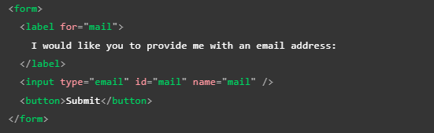
JavaScript
-
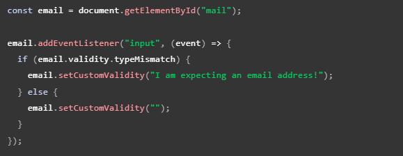
Aquí almacenamos una referencia a la entrada de correo electrónico, luego le agregamos un detector de eventos que ejecuta el código contenido cada vez que se cambia el valor dentro de la entrada.
Dentro del código contenido, verificamos si la propiedad validity.typeMismatch de la entrada de correo electrónico devuelve verdadero, lo que significa que el valor contenido no coincide con el patrón de una dirección de correo electrónico bien formada. Si es así, llamamos al método setCustomValidity() con un mensaje personalizado. Esto hace que la entrada no sea válida, de modo que cuando intenta enviar el formulario, el envío falla y se muestra el mensaje de error personalizado.
Si la propiedad validity.typeMismatch devuelve falso, llamamos al método setCustomValidity() con una cadena vacía. Esto hace que la entrada sea válida, por lo que se enviará el formulario.
Resultado del código de ejemplo:
-
Un buen complemento para las validaciones basadas en JavaScript es el atributo "novalidate", el cual indica al navegador que no debe realizar la validación integrada por defecto; de ese modo no se mostrarán los mensajes de error automáticos. Por su parte, este atributo no deshabilita el soporte para la API de validación de restricciones ni la compatibilidad con las pseudo-clases CSS, por lo tanto podremos mostrar sin inconveniente nuestros mensajes de error personalizados.
Validación de formularios sin una API integrada
Para estructurar las validaciones de esta forma es necesario tener en cuenta ciertas diferencias que repercuten en el código:
La primera diferenciación consiste en que la pseudo-clase ":invalid" es necesario definirla como una clase más, ya que al no trabajar con la API es necesario realizar la vinculación con esta de forma manual.
La segunda consiste en estructurar el código JavaScript desde cero, teniendo en cuenta todos los aspectos intrínsecos del código: desde en qué ocasiones no se va a enviar la información, qué mensaje se mostrará, de qué forma se realizará la validación, etc.
A continuación se muestra un ejemplo algo más completo de una validación JavaScript sin el uso de la API:
HTML
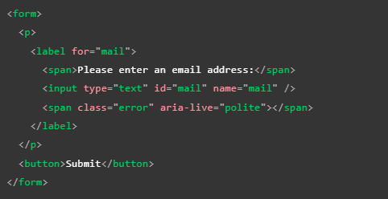
CSS
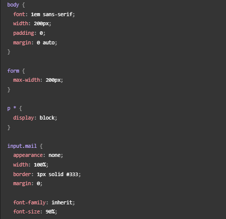
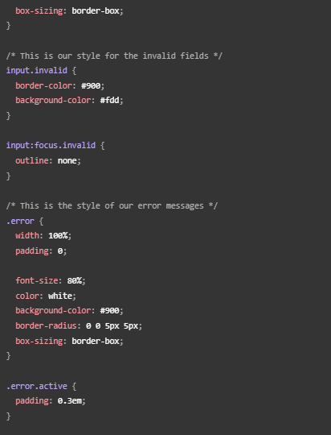
JavaScript
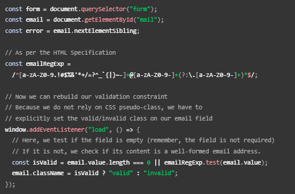
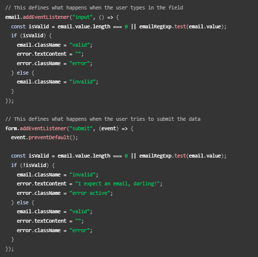
Tal como se puede apreciar, realizar una validación propia utilizando JavaScript no es especialmente difícil siempre y cuando el código haya sido correctamente planteado. A su vez, es una buena práctica que al crear código JavaScript u otro lenguaje, se procure que el código sea de carácter reutilizable, ya sea para otros elementos, formularios e incluso otras páginas; de esa forma se puede simplificar y agilizar el desarrollo de la página.